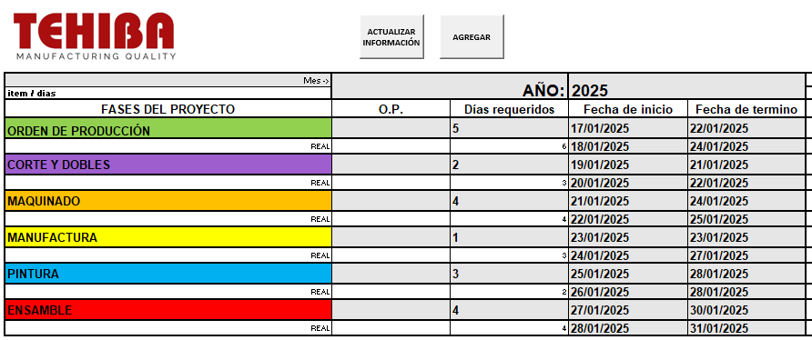
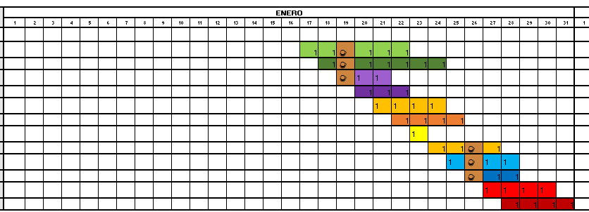

Project Overview
Tech Stack: Excel, VBA
This Excel-based tool was developed to manage production planning using an automated Gantt chart. It allows visualization and comparison between planned and actual execution times across different departments.
Key Features
- Planning: Input start date and estimated duration per task. The system automatically generates a visual timeline across a horizontal calendar.
- Working Days Logic: Only business days are considered. Sundays are visually marked to indicate non-working days.
- Performance Tracking: Records actual execution time and compares it against the planned schedule.
- Automation: Task blocks can be duplicated easily, and the chart can be refreshed and updated with a single action.
This tool improves production planning by helping identify delays, bottlenecks, and performance across departments.
Gallery

